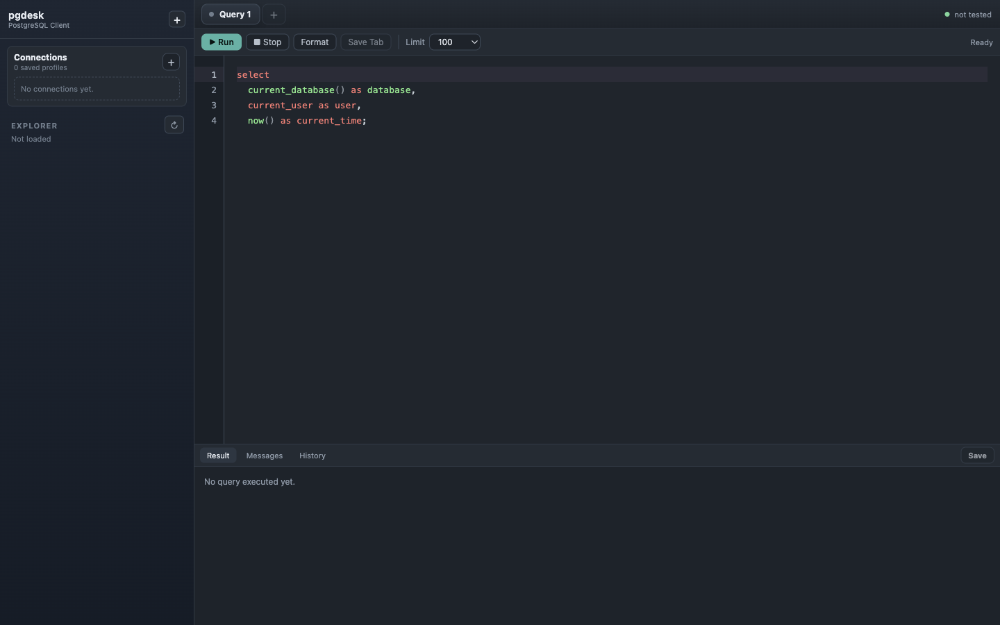
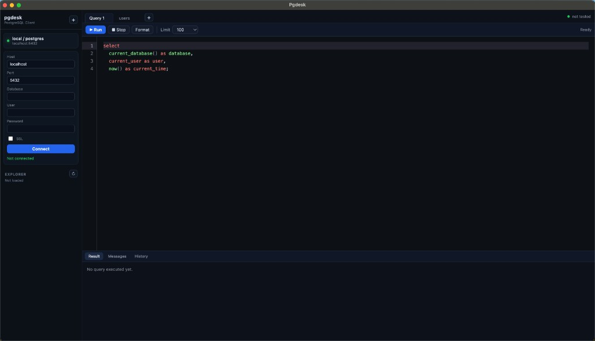
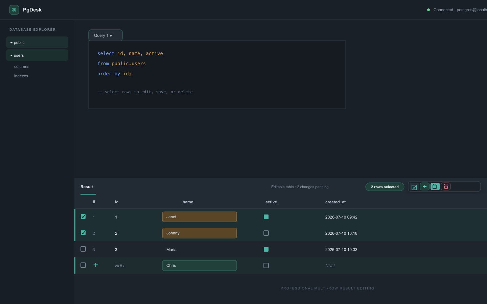

Splash-first startup
Show a branded loading screen while the hidden workspace prepares, then reveal the maximized app only after it is ready.
A professional PostgreSQL workspace for connection management, schema exploration, multi-tab SQL editing, editable results, and database backup workflows.



PgDesk keeps the common database tasks close together: connect, inspect, query, edit, save, and back up without switching tools.
Show a branded loading screen while the hidden workspace prepares, then reveal the maximized app only after it is ready.
Save connection profiles with host, port, database, username, password, and optional SSL.
Browse schemas, tables, and views in a collapsible tree with a modern context menu.
Create query tabs, save tab content, restore workspace state, format SQL, and run all or only the highlighted SQL quickly.
Select multiple rows, add a draft row, save changes, and delete safely when table metadata and primary keys are available.
Inspect columns, indexes, foreign keys, and schema-editing SQL from the table context menu.
Export SQL backups with versioned filenames and restore a database from a selected backup file.
The app screenshots are captured from the current Electron build and kept lightweight for README, GitHub, and documentation use.


Pull requests run lint, Vitest unit/component tests, a production build, and a Playwright Electron smoke test before they are ready to merge.
The guide covers installation, connection setup, schema browsing, SQL tabs, editable results, backup and restore, and PostgreSQL client-tool requirements.